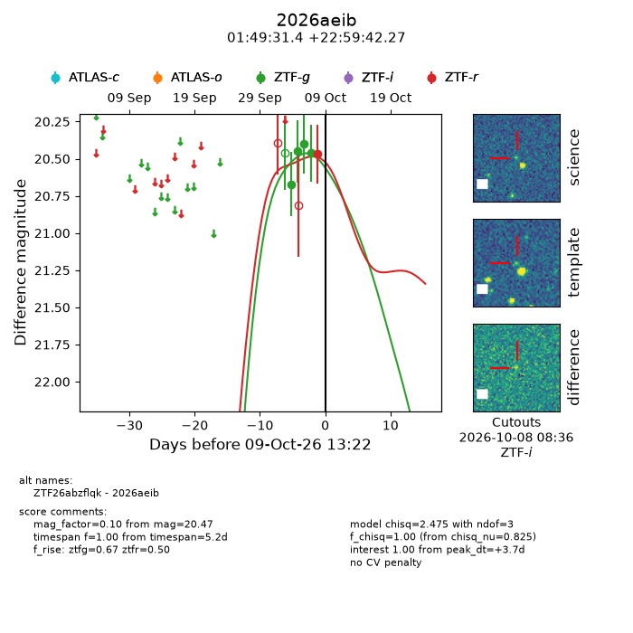
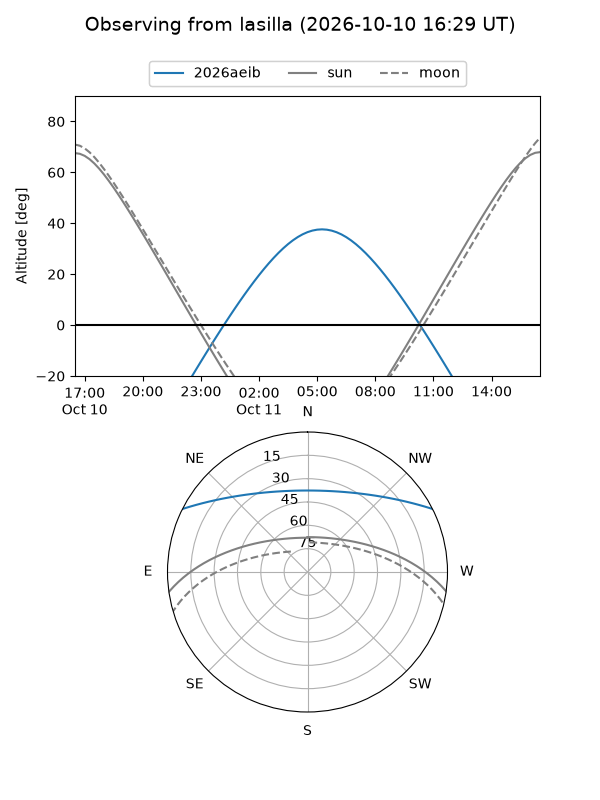
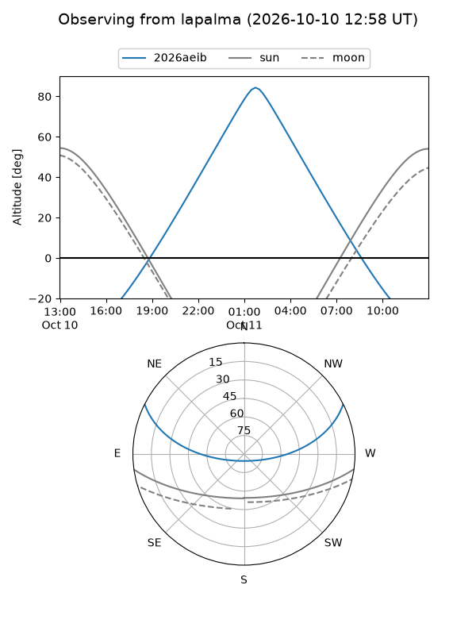
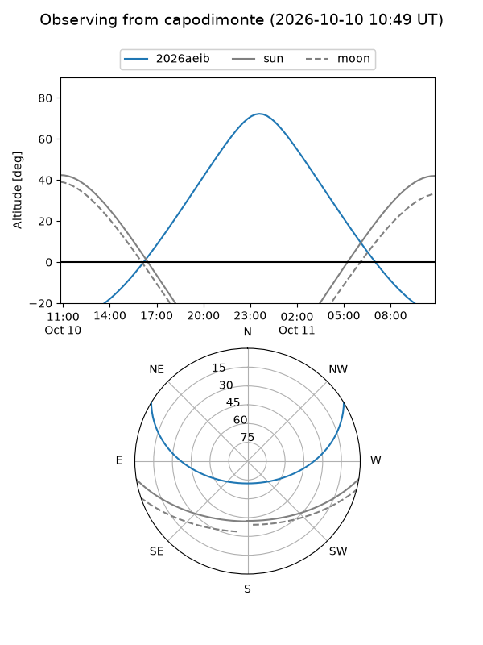
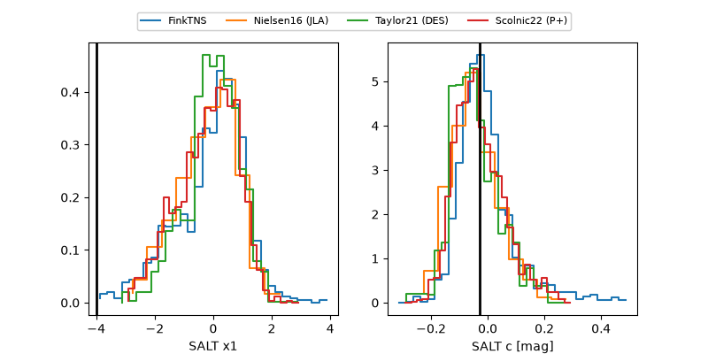

2026aeib
Target 2026aeib at 2026-10-09 13:25
Aliases and brokers:
FINK-ZTF: ztf.fink-portal.org/ZTF26abzflqk
Lasair-ZTF: lasair-ztf.lsst.ac.uk/objects/ZTF26abzflqk
ALeRCE-ZTF: alerce.online/object/ZTF26abzflqk
YSE-PZ: ziggy.ucolick.org/yse/transient_detail/2026aeib
TNS name: wis-tns.org/object/2026aeib
Direct TNS query: direct search
alt names
ZTF26abzflqk (ztf,fink_ztf)
2026aeib (tns,yse)
Coordinates:
equatorial (ra, dec) = 27.3810,+22.99507
equatorial (HMS+DMS) = 01:49:31.44,+22:59:42.27
galactic (l, b) = (139.9523,-37.94934)
Flags:
peak dt: +3.7
Photometry:
last ztfg=20.46, ztfr=20.47
4 ztfg, 1 ztfr detections
Lightcurve

Visibility



Additional plots
